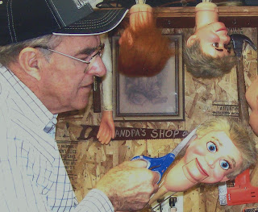

Wigging questions
8/13/2009
{kind=link}

Questions: I have several questions about adding hair to a figure with molded hair (Charlie McCarthy).
1) How do you attach the fur you use to the head of the figure?
2) How long is the fur you use?
3) What color is the fur?
4) Is attaching the hair difficult for a novice?
2) How long is the fur you use?
3) What color is the fur?
4) Is attaching the hair difficult for a novice?
* * * * *
Answers:
1) I attach the hair using a hot glue gun, applying the glue sparingly, primarily around the edges.
2) It depends on the style of hair desired. On Charlie I would use the longer nap fake fur for more traditional hair style (see the head hanging in the background with red hair). The fellow in the foreground of this picture is getting hair of mid-length nap.
3) I prefer med/dark brown for Charlie, but I've also used black. And on rare occasions blond and auburn. Whatever the customer requests.
4) Ahhh - the most difficult question of all! It's easy for me as I've wigged literally thousands of heads. You'll need patience and a steady hand. I wrote more on this subject on my 7/6/09 post:
PS: For $25.00 I will wig your Charlie for you, and this price includes postage for the head's return.